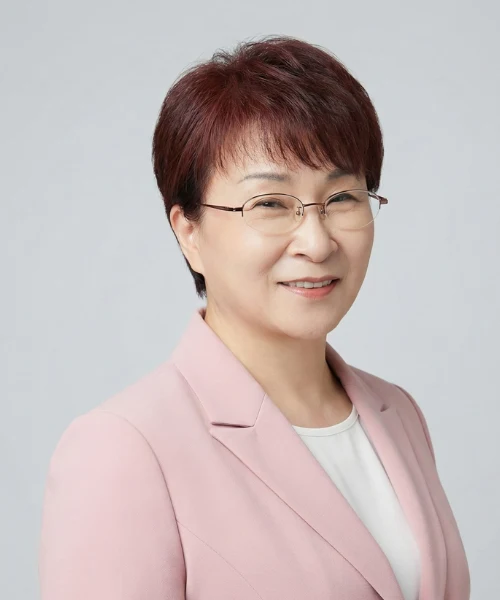

小規模事業者・福祉事業所向け
仕事に取り入れる
AI研修
ChatGPTの基本操作から、文章の作成・整理、確認リスト、広報素材づくりまで。職場の身近な題材で練習します。
- 目指す状態
- 担当者が、自分の仕事に使える場面と確認すべき点を理解して試せる。
- 実施方法・費用
- 対面・オンライン。内容・時間・人数・場所を伺い、お見積もりします。
岡山・津山の小規模事業者・福祉事業所へ
「何から始める？」から、
担当者が自分で使い続けられるところまで。
初心者向けのAI研修と、SNS発信の実践伴走。
実際の仕事を題材に、手を動かしながら一緒に進めます。
対面・オンライン対応／自治体・地域団体の講座も承ります

講座・研修・勉強会・個人レッスンなど
延べ参加規模（一部概算）
2026年11月11日時点の活動記録。
登壇・進行・共同主催を含みます。
ご依頼いただけること
目的や担当者の経験に合わせて、支援の形をご提案します。
小規模事業者・福祉事業所向け
ChatGPTの基本操作から、文章の作成・整理、確認リスト、広報素材づくりまで。職場の身近な題材で練習します。
SNS発信の担当者向け
投稿の目的とテーマを整理し、文章・画像の制作から振り返りまで。実際の投稿を作りながら、続けられる手順を整えます。
自治体・地域団体向け
暮らしに役立つ質問や画像づくりを通じて、AIに触れるきっかけを。初心者の方のペースに合わせて進めます。
「研修で何を扱えばよいか」からご相談いただけます。対面の開催場所や交通費は、内容と合わせて事前に確認します。
実績・事例
これまでに担当した講座の一部をご紹介します。
22名参加
わんこネット
「はじめてのAI活用講座」
ChatGPTを使った文章の作成・整理、確認リスト作成、チラシ画像づくりを体験していただきました。
個人情報の取り扱い、AIに入力する情報の確認、職場でのルールづくりも含めて紹介しました。
開催報告を見る第29回つやまニア「夏休みAI体験講座」。11名が参加し、画像生成を体験する講座を担当しました。
開催報告を見る「つながる まなびのラーニバル」で「生活が便利になる？AI超入門講座」を担当。約20名が参加しました。
本人の2026年11月8日の開催報告に基づく記録。
活動記録からの抜粋。回数・人数の集計基準日は2026年11月11日です。
| 時期 | 内容 | 担当 |
|---|---|---|
| 2024年9月・12月 | うのベース／初心者向けAI講座 | 講師 |
| 2025年3月 | C’snet津山／AI活用講座 | 講師 |
| 2025年4月〜 | SHIFT AI／画像生成・動画編集などのウェビナー | 講師 |
| 2025年4月〜12月 | SHIFT AI／オンライン交流会・初心者ゼミ | ファシリテーター |
| 2025年9月・10月 | 企業内研修／計18回 | 講師 |
| 2026年1月 | ひとやね／AIアニメ体験会 | 自主開催 |
| 2026年8月 | 津山市・佐良山公民館／夏休みAI体験講座 | 講師 |
| 2026年9月 | わんこネット／福祉職員向けAI活用講座 | 講師 |
| 2026年11月 | 津山市立図書館／AI超入門講座 | 講師 |
| 2025年9月〜2026年10月 | 岡山の作業会・サテライト／計16回 | 共同主催 |
上記のほかに、コミュニティでの講座、自主開催セミナー、個人レッスンなどを行っています。
担当講師
AI講師・AIクリエイター
岡山県津山市を拠点に活動
学校関係の仕事を退職後、Webデザインや動画編集を学び、2024年に生成AIの活用を開始。同年9月からAIを教える活動を始めました。
SHIFT AIの講師業務に加え、自治体・企業・福祉事業所の講座や研修を担当しています。初めての方と一緒に操作しながら、現場で使える方法を考えます。
説明のあとに実際に試す時間をつくり、つまずいたところを確認しながら進めます。
案内文や投稿文、確認リストなど、担当者が使う場面を想像できる内容にします。
伴走支援では、自社用の入力例やチェックリスト、担当者用の手順を一緒に整えます。
ご依頼の流れ
対象者、困っていること、希望時期をフォームからお知らせください。未定の項目があっても大丈夫です。
AIの利用経験や業務内容、人数、開催方法を伺い、目指す状態を一緒に整理します。
内容・時間・費用・対応範囲をご案内します。確認いただいたうえで日程を調整します。
実際に操作しながら学びます。伴走支援では、投稿と振り返りを重ね、継続する手順を整えます。
よくある質問
基本操作から扱えます。参加される方の経験を伺い、内容と進め方を調整します。
まず触ってみたい、職員全体で基礎を学びたい場合は研修。SNS担当者が実際の投稿を作りながら継続する手順を整えたい場合は、3か月の伴走支援をご検討ください。
どちらも対応しています。津山市を拠点に、対面の場所や交通費、オンラインの実施方法を事前に確認します。SNS伴走支援の対面・併用の料金は、サービス詳細をご覧ください。
講座・研修は内容・時間・人数・場所に合わせてお見積もりします。SNS伴走支援はオンライン3か月132,000円（税込）、対面3か月165,000円（税込）です。交通費などの条件はサービス詳細でご案内しています。
個人の方向けのレッスンも行っています。個人向けページで内容をご案内しています。
研修・講座・伴走支援のご相談
小規模事業者・福祉事業所の研修、SNS担当者の支援、地域でのAI講座。目的に合う進め方を一緒に考えます。
お問い合わせフォームを開くフォームでは「具体的に相談したいこと」に、ご希望の内容をご記入ください。
決まっていない項目は「未定」で構いません。